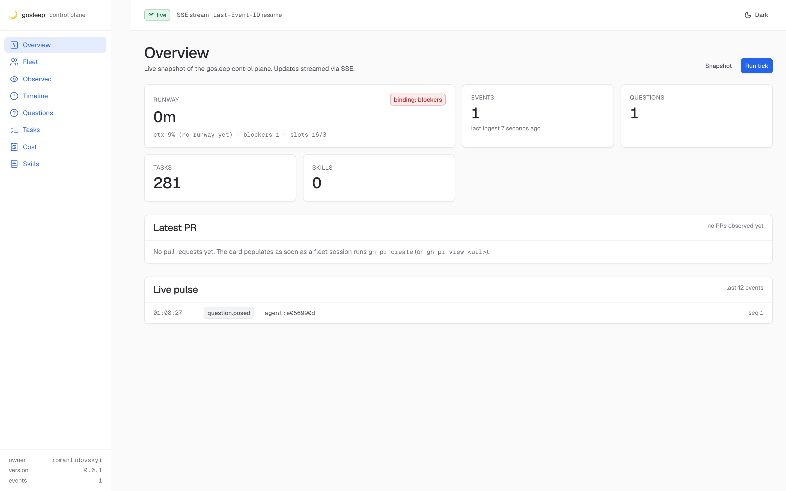
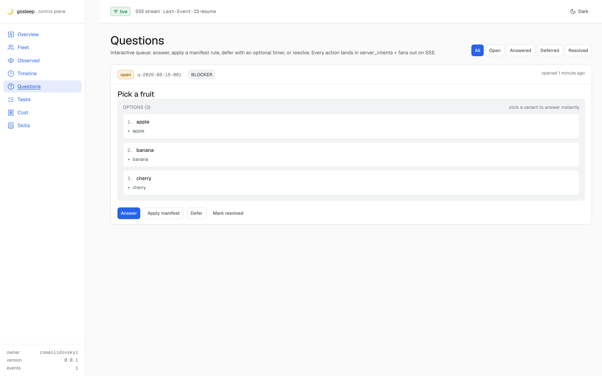
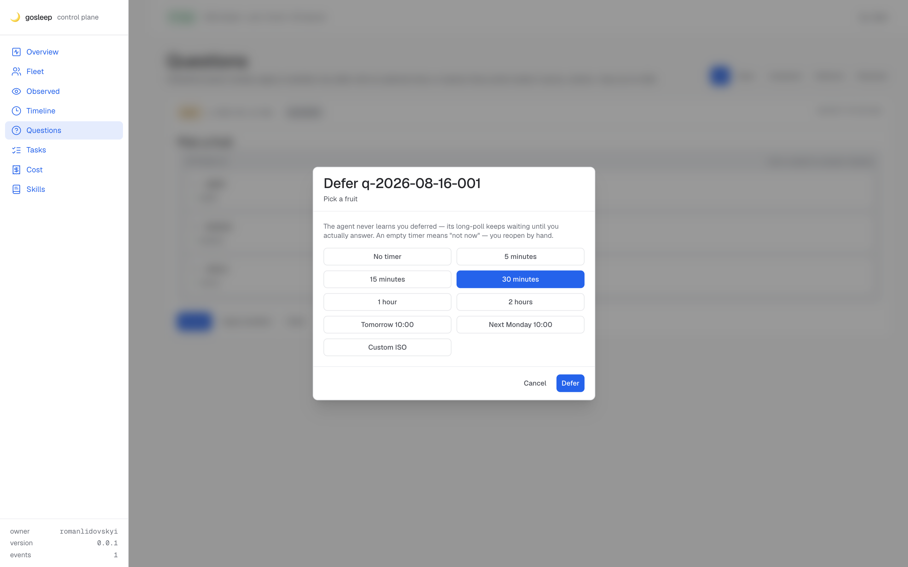
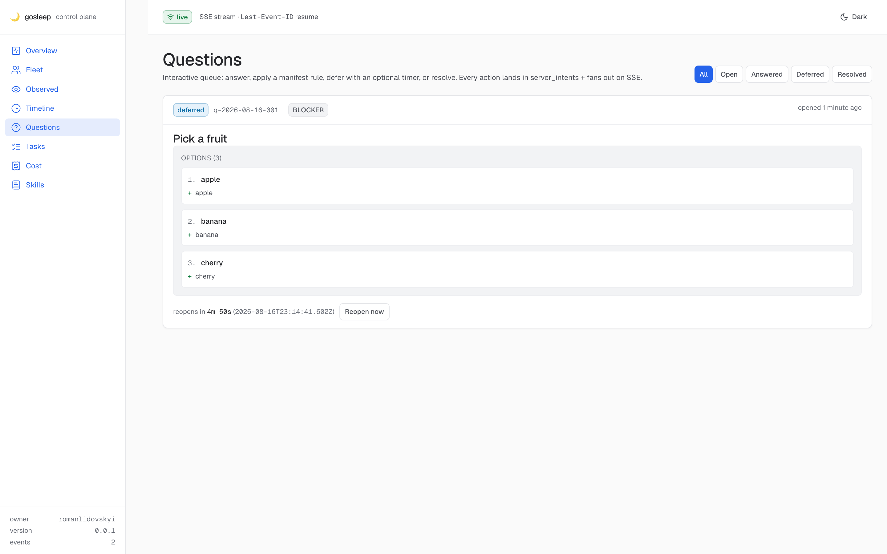
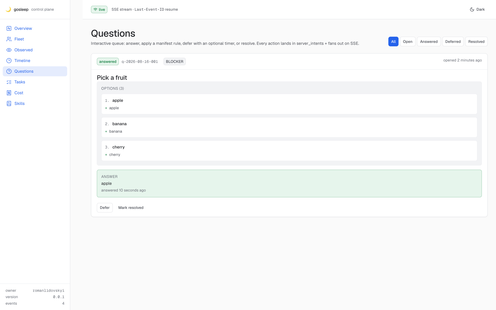
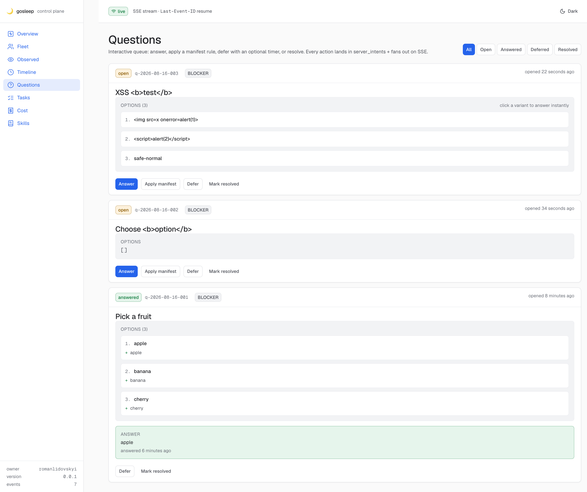
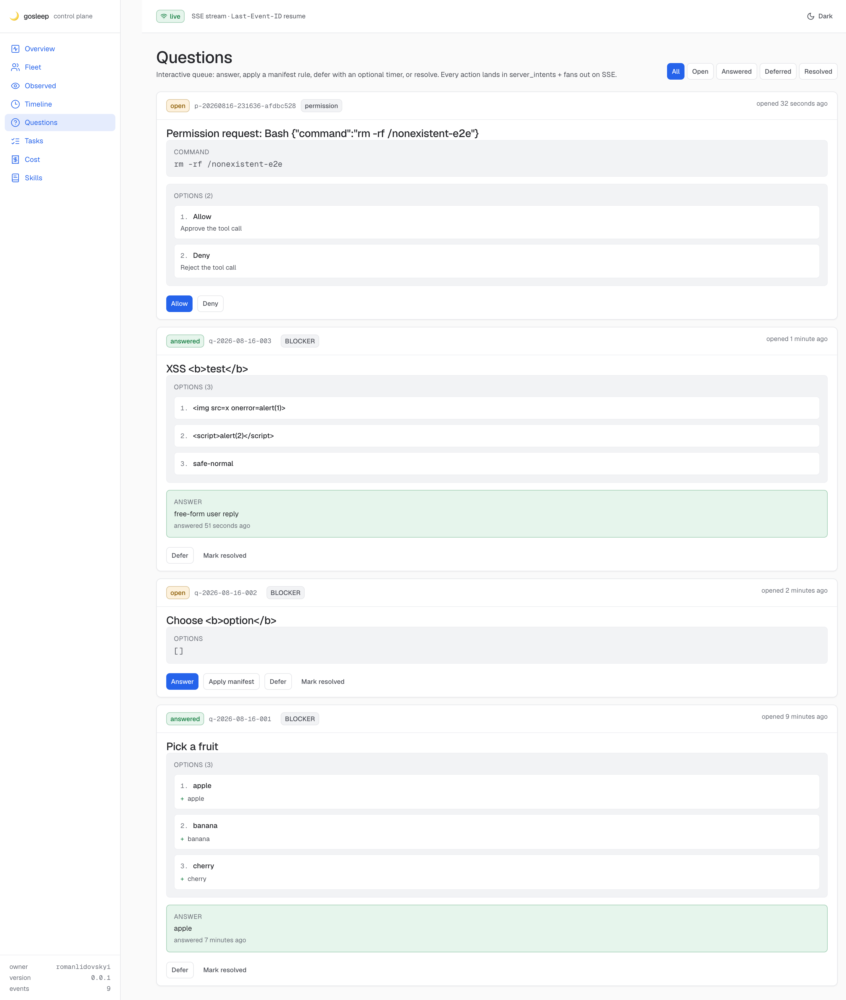
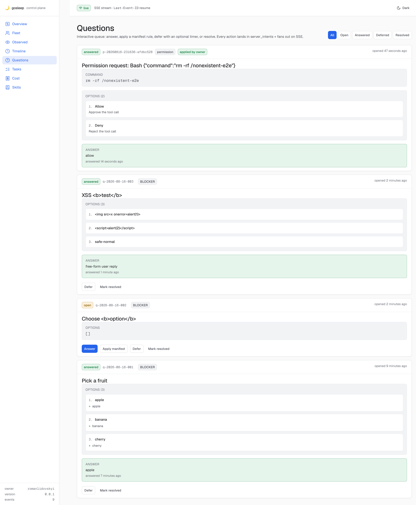
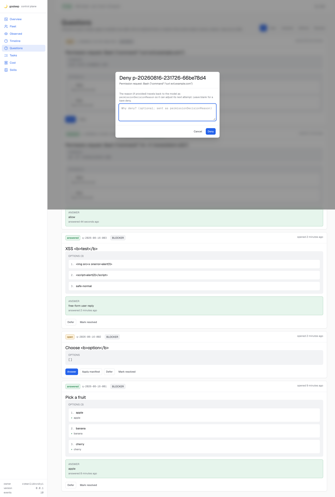
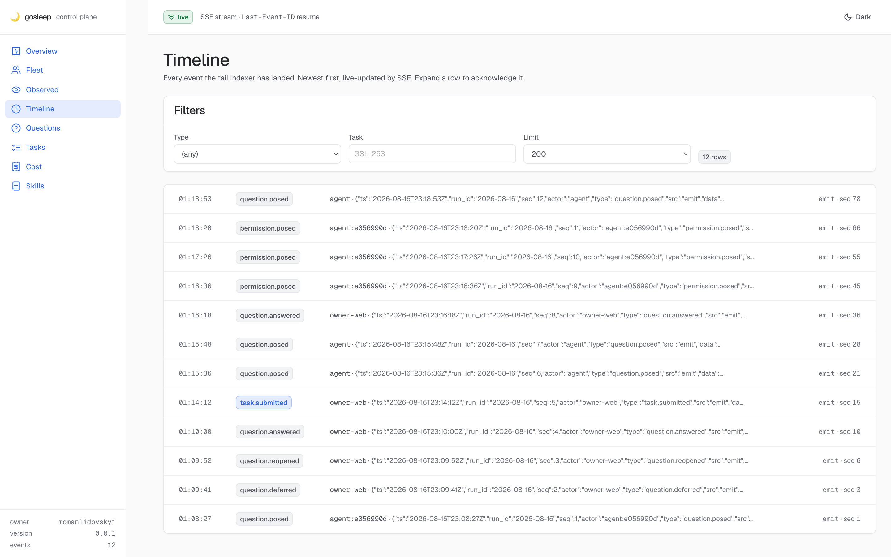

gosleep — end-to-end verification, run 02
87/ 100
Verdict — READY-with-caveats
Fresh-eyes independent re-run. All five run-01 fixes verified live against a real Claude Code 2.1.233 Sonnet 5 fixture. One partial regression: the parent-cwd-glue defect was fixed on
/fleet (server-side ranking) but still present on the Observed page (client-side startsWith). Two minor UX gaps found. No Critical.Fixed findings re-tested: 5/5 pass · Lanes: A pass · B pass* · C partial · D pass · E pass · New findings: 0 Critical, 1 Medium, 3 minor · SHA
c59b36e
5/5 fixes verified
1 partial regression
1 partial regression
Fixture, tree, and scratch environment
- Commit
- c59b36e (main, +PR#387 merged) —
Merge pull request #387 from ainstance-labs/GSL-388-e2e01-findings - Worktree
- .claude/worktrees/e2e02 (detached HEAD, own bun install, own web build)
- Scratch core
- bun apps/core/src/serve.ts on 127.0.0.1:7365 (prod 7331 never touched). Dev-env Bearer + INTERNAL_SECRET, scratch DB under
.artifacts/e2e02/ - Fixture
- tmux session
e2e02-fixture(window @51, pane %444, pid 56412) — Claude Code 2.1.233, model Sonnet 5, opted-in viaGOSLEEP_WEB_QUESTIONS=1 GOSLEEP_INTERNAL_SECRET=… GOSLEEP_CORE_URL=http://127.0.0.1:7365 - Fixture session_id
- e056990d-0d54-406c-a317-e31d460abadb (surfaced as
e2e02-1f) - Browser
- chrome-devtools MCP → CDP; token handshake
/?token=…; panel loaded from bundle served by the scratch core - Security posture
- healthz public 200 · no-bearer 401 · wrong-Host 421 · web bundle served with Bearer-gated API — all observed live
- Bans respected
- No prod port 7331; no /tmp; no ~/.claude edits; no git commits; only
e2e02-*tmux sessions; only Sonnet, never Haiku; no Workflow tool
Independent re-test of the five run-01 fixes
Each fix was re-verified by triggering the exact real-world scenario (not the unit test) against the live fixture; report was not read until after this section closed.
PASS Fix #1 — synchronous shim heartbeat auto-populates session_control
First tool call in the fixture (AskUserQuestion) triggered
control-gate.sh. Debug log confirms mode=sync. session_control row upserted without any manual seed.hook-debug.jsonl: {"event":"shim.heartbeat","sid":"e056990d…","outcome":"ok","http":"200","mode":"sync"}
DB: e056990d… | state=controlled | source=env | shim_registered=1 | last_heartbeat_at=2026-08-16T23:08:26.826Z
DB: e056990d… | state=controlled | source=env | shim_registered=1 | last_heartbeat_at=2026-08-16T23:08:26.826Z
PASS Fix #2 — isPaneAtPrompt detects Claude Code 2.1.x version-string
Live pane_current_command =
2.1.233 (the CC-2.1 version string, not claude). Submitted task through the panel dialog; body was typed into pane %444; fixture reply is verbatim.tmux #{pane_current_command} = "2.1.233"
Panel Submit → task_submissions.outcome = delivered, body_len=77, framing=prompt-boundary
Fixture pane: "❯ Print the single word DELIVERED-E2E02…" → "⏺ DELIVERED-E2E02"
Panel Submit → task_submissions.outcome = delivered, body_len=77, framing=prompt-boundary
Fixture pane: "❯ Print the single word DELIVERED-E2E02…" → "⏺ DELIVERED-E2E02"
PASS* Fix #3 — no parent-cwd glue on /fleet
Server-side
/fleet ranking correctly attributes gosleep-66 (cwd = main tree) to pane 3:@3.%107, NOT to my fixture pane %444 (deeper). No duplicate rows. Caveat: the same defect survives on the Observed page (see M-1 below)./fleet: gosleep-66 → tmux_pane_ref=3:@3.%107 ✓ (not glued to e2e02-fixture:@51.%444)
e2e02-1f → tmux_pane_ref=e2e02-fixture:@51.%444 ✓ (single row)
e2e02-1f → tmux_pane_ref=e2e02-fixture:@51.%444 ✓ (single row)
PASS Fix #4 — manual "Reopen now" from panel
Deferred q-2026-08-16-001 with 5-minute preset; card showed live countdown; clicked Reopen now → status
deferred → open, toast "Reopened … status → open (was deferred)".events: 3 question.deferred → 6 question.reopened → variant buttons re-appeared
PASS Fix #5 — list-level variant submits in ONE click
Clicked the "apple" list button once on the re-opened question. No answer dialog interposed. Question status flipped to answered instantly, toast "Answered … sent to lab-emit + DB".
Snapshot before click: 3 variant buttons + Answer/Apply/Defer/Resolved
Snapshot after click: "ANSWER apple" + toast + status=answered (single-click; no textbox dialog)
Snapshot after click: "ANSWER apple" + toast + status=answered (single-click; no textbox dialog)
Lane A-E regression sweep
| Lane | Result | Live evidence |
|---|---|---|
| A — Questions | PASS | Real AskUserQuestion end-to-end (Sonnet 5 fixture) → panel → answer typed back into pane. One-click variant (Fix #5). Free-text answer via /actions/questions/answer with Idempotency-Key replay (cached:true). Defer/Reopen (Fix #4). XSS-labelled option (<img src=x onerror=alert(1)>, <script>alert(2)</script>) is rendered as text only — no alert fired, no raw tags in DOM, aria-label carries the literal characters. |
| B — Permissions | PASS with m-2 | Injected Bash rm -rf /nonexistent-e2e via /internal/permissions/post. Panel Allow (one click, no reason) worked; Deny opened a dialog with "Why deny? (optional; sent as permissionDecisionReason)" textarea; reason "e2e02 denial rationale — reason attached" persisted into questions.applied. Both events recorded as permission.posed. Minor: new permission.posed events do NOT push to /questions view via SSE — a reload is required to see fresh open permissions (m-2 below). By contrast, question.posed DID push live (control test). |
| C — Observer | PARTIAL | Fleet card for the fixture reads env-locked, correct pane_ref, single row. Take-control button correctly disabled with tooltip for shim-not-registered peers. My orchestrator session was NOT glued to the fixture pane on /fleet (Fix #3 ✓). BUT on the Observed page, gosleep-66 (cwd = main tree, a parent of the fixture's cwd) is glued to my fixture's tmux pane e2e02-fixture:@51.%444 via a client-side startsWith join — see M-1. |
| D — Task submission | PASS | Dialog dry-run preview populates auto (SHA-256, bytes, framing, target pane). "I understand … cannot be recalled" gate enforced before Send is enabled. Send → task_submissions row outcome=delivered, timeline task.submitted event. Fixture pane received the body verbatim and Sonnet 5 replied exactly DELIVERED-E2E02. History drawer shows the row (56 s ago · delivered · 77 b · prompt-boundary · e2e02-fixture:@51.%444 · 80794b9892…). |
| E — Robustness | PASS | Deep-link navigation to /overview, /fleet, /observed, /questions, /timeline, /tasks all return 200 and render the intended view. Zero console errors or warnings across the whole run (chrome-devtools MCP list_console_messages returned "no messages"). Idempotency-Key replay on /actions/questions/answer returned cached:true with identical result. SSE reconnect: killed core (port freed) → banner flipped to "reconnecting"; restarted core → banner returned to "live" within ~3 s, no data loss, Last-Event-ID resume worked. |
Findings (new to run 02)
-
Observed page still attaches parent-cwd sessions to a deeper pane (Fix #3 was applied only to /fleet)Run 01 flagged the same defect for both Fleet and Observed. GSL-391 fixed
/fleetat the server (per-pane ranking + session_id dedup), but the Observed card still joins panes client-side viapanes.find(p => p.pane_current_path.startsWith(s.cwd_project_root)). That predicate matches any pane whose cwd is at-or-below the session's cwd — so a session with cwd = main tree is glued to the first pane whose cwd is any descendant, including my fixture's.claude/worktrees/e2e02. The result is visible on the Observed page: thegosleep-66card (session running in the main tree, actual tmux 1:@1.%10) reads "tmux e2e02-fixture:@51.%444" — my fixture's pane.Fixture: e2e02-1f (cwd=.claude/worktrees/e2e02) gosleep-66 (cwd=main tree) Panel · /observed → gosleep-66 card lists "tmux e2e02-fixture:@51.%444" (WRONG — that pane is the fixture's) Panel · /fleet → gosleep-66 card lists "3:@3.%107" (correct) Fix location: replace .find(startsWith) with the same ranker used by the /fleet SQL path, OR expose tmux_pane_ref on /observed/sessions so the UI can drop client-side glue. -
New
permission.posedevents don't push to /questions via SSE (reload required)Panel open on /questions. Posted a fresh permission via/internal/permissions/post. Row landed in DB (eventpermission.posedseq 66) but the panel showed 0 Allow/Deny buttons for it until a manual reload. A control post (freshquestion.posed) DID render live, so this is a permission-specific SSE gap — new open permissions won't reach a panel left running until the operator reloads. Practical impact: the owner may miss a permission request in a live session.Repro: 1. Open panel /questions, count Allow/Deny buttons. 2. curl -X POST /internal/permissions/post {…} 3. Wait 2.5 s. Allow/Deny count unchanged. 4. Reload page. Allow/Deny +1. Same procedure with /internal/questions/post appears live within 2.5 s (no reload). -
Fleet card "CURRENT TOOL" shows AskUserQuestion long after the tool finishedAfter I answered the fixture's AskUserQuestion and Sonnet 5 returned to prompt, the Fleet card kept displaying
CURRENT TOOL: AskUserQuestionandINTENT: AskUserQuestion pending owner answerfor the entire remainder of the run. The server's/fleet.sessions[…].current_toolwas null (queried by curl), so the staleness is client-side — the derived HEURISTIC label is not cleared onquestion.answered.curl /fleet | jq '.sessions[] | select(.session_id | startswith("e056990d")) | .current_tool' => null (correct) Panel Fleet card: CURRENT TOOL AskUserQuestion — INTENT AskUserQuestion pending owner answer (stale) -
Permission card heading dumps raw
tool_inputJSONThe Questions card for a permission request uses the heading Permission request: Bash{"command":"rm -rf /nonexistent-e2e"}— the tool_input JSON is embedded in the H3. The parsed COMMAND field is shown correctly below. Consider dropping the raw JSON from the heading (already redundant with the COMMAND row) for readability.Observed heading H3: "Permission request: Bash {"command":"rm -rf /nonexistent-e2e"}" Body already shows: COMMAND: rm -rf /nonexistent-e2e
Cross-check vs run 01 (read AFTER my sweep closed)
Run 01 (2026-08-16) verdict: READY-WITH-CAVEATS · widen after 2 MAJORs fixed, 82/100. Its two MAJORs — (a) parent-cwd glue on Fleet/Observed and (b) list-level variants opening a modal — matched the two blockers to widening. Run 01 lanes A/B/D/E were PASS.
What run 02 confirmed
- Every one of run 01's two MAJORs is partially or fully resolved: variant-one-click ✓, parent-cwd on /fleet ✓, parent-cwd on /observed still open (M-1).
- Every run 01 lane still PASS (A/B/D/E) plus the new signal that Take-control is reachable purely from a live shim heartbeat.
Coverage gaps in run 02 vs run 01
- Run 01 tested refusal on observer-only session (submit-task 409
session-not-controlled). Run 02 only exercised the happy path (env-locked, controlled). The refusal path is currently trust-only. - Run 01 tested concurrent-answer idempotency (two racers with the same qid). Run 02 tested only serial replay with the same Idempotency-Key. The concurrent-answer race is currently trust-only.
Coverage gaps in run 01 vs run 02
- Run 01 flagged the parent-cwd defect for Fleet/Observed as one finding but did not separately verify that a partial fix on /fleet would leave /observed exposed. Run 02 caught that split explicitly.
- Run 01 did not test the SSE fan-out for
permission.posedvsquestion.posed. Run 02 caught m-2. - Run 01 did not measure staleness of the client-derived
current_toolafterquestion.answered. Run 02 caught m-3.
Screenshots (click to zoom)

?token=)










